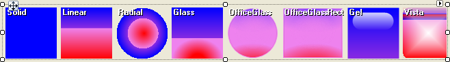

FillPrimitive
The FillPrimitive class is responsible for filling in an area on the screen. It has a variety of
properties that allow you to control the style of the fill:
__GradientStyle__allows you to select from solid, linear, radial, glass, office glass, office glass
rectangle, gel, and vista styles.Solid: The color of the fill is set by the BackColor property.
Linear: The shading of the fill is set by the BackColor,
BackColor2, BackColor3, and BackColor4 properties.
The angle of the shading is set by the GradientAngle property.Radial: The shading of the fill is set by the BackColor,
BackColor2, and BackColor3 properties. The
GradientPercentage property controls the width of the outer color band and the
GradientPercentage2 property controls the width of the middle color band.Glass:__The shading of the fill is set by the __BackColor,
BackColor2, BackColor3, and BackColor4
properties. The GradientPercentage property controls the position of the horizontal dividing line in the fill.OfficeGlass: The shading of the fill is set by the BackColor,
BackColor2, BackColor3, and BackColor4
properties. The GradientPercentage and GradientPercentage2 properties
control the relative amounts of the different colors in the fill.OfficeGlassRect:__The shading of the fill is set by the __BackColor,
BackColor2, BackColor3, and BackColor4
properties. The GradientPercentage and GradientPercentage2 properties
control the relative amounts of the different colors in the fill.Gel: The shading of the fill is set by the BackColor and
BackColor2 properties. The GradientPercentage property controls the height of the highlight bubble.Vista: The shading of the fill is set by the BackColor,
BackColor2, BackColor3, and BackColor4
properties. The GradientPercentage and GradientPercentage2 properties
control the position of the horizontal lines in the fill.BackColor, BackColor2, BackColor3, and
BackColor4 are combined in various ways depending on the gradient style that you have selected.__GradientAngle__sets the angle of the linear gradient.
GradientPercentage and __GradientPercentage2__adjust drawing parameters for the various styles.
The example below iterates the GradientStyles enumeration and creates a FillPrimitive sample for each value.
[C#] Creating a FillPrimitive
public class MyFillPrimitiveElement : RadElement
{
protected override void CreateChildElements()
{
Array gradientStyleValues = Enum.GetValues(typeof(GradientStyles));
StackLayoutPanel layoutPanel = new StackLayoutPanel();
layoutPanel.Orientation = System.Windows.Forms.Orientation.Horizontal;
foreach (GradientStyles gradientStyle in gradientStyleValues)
{
StackLayoutPanel panel = new StackLayoutPanel();
panel.Orientation = System.Windows.Forms.Orientation.Vertical;
panel.MinSize = new Size(80, 80);
panel.Margin = new System.Windows.Forms.Padding(3);
FillPrimitive fillPrimitive = new FillPrimitive();
fillPrimitive.NumberOfColors = 4;
fillPrimitive.GradientStyle = gradientStyle;
fillPrimitive.GradientAngle = 90;
fillPrimitive.GradientPercentage = 0.18F;
fillPrimitive.GradientPercentage2 = 0.57F;
fillPrimitive.BackColor = Color.FromArgb(0, 79, 191);
fillPrimitive.BackColor2 = Color.FromArgb(0, 94, 199);
fillPrimitive.BackColor3 = Color.FromArgb(121, 200, 251);
fillPrimitive.BackColor4 = Color.FromArgb(206, 243, 255);
fillPrimitive.MinSize = new Size(75, 75);
panel.Children.Add(fillPrimitive);
TextPrimitive textPrimitive = new TextPrimitive();
textPrimitive.Text = gradientStyle.ToString("g");
textPrimitive.ForeColor = Color.Black;
textPrimitive.Font = new Font(textPrimitive.Font.FontFamily, 9.25f, FontStyle.Bold);
panel.Children.Add(textPrimitive);
layoutPanel.Children.Add(panel);
}
this.Children.Add(layoutPanel);
base.CreateChildElements();
}
}
[VB.NET] Creating a FillPrimitive
Public Class MyFillPrimitiveElement
Inherits RadElement
Protected Overrides Sub CreateChildElements()
Dim gradientStyleValues As Array = System.Enum.GetValues(GetType(GradientStyles))
Dim layoutPanel As New StackLayoutPanel()
layoutPanel.Orientation = System.Windows.Forms.Orientation.Horizontal
For Each gradientStyle As GradientStyles In gradientStyleValues
Dim panel As New StackLayoutPanel()
panel.Orientation = System.Windows.Forms.Orientation.Vertical
panel.MinSize = New Size(80, 80)
panel.Margin = New System.Windows.Forms.Padding(3)
Dim fillPrimitive As New FillPrimitive()
fillPrimitive.NumberOfColors = 4
fillPrimitive.GradientStyle = gradientStyle
fillPrimitive.GradientAngle = 90
fillPrimitive.GradientPercentage = 0.18F
fillPrimitive.GradientPercentage2 = 0.57F
fillPrimitive.BackColor = Color.FromArgb(0, 79, 191)
fillPrimitive.BackColor2 = Color.FromArgb(0, 94, 199)
fillPrimitive.BackColor3 = Color.FromArgb(121, 200, 251)
fillPrimitive.BackColor4 = Color.FromArgb(206, 243, 255)
fillPrimitive.MinSize = New Size(75, 75)
panel.Children.Add(fillPrimitive)
Dim textPrimitive As New TextPrimitive()
textPrimitive.Text = gradientStyle.ToString("g")
textPrimitive.ForeColor = Color.Black
textPrimitive.Font = New Font(textPrimitive.Font.FontFamily, 9.25F, FontStyle.Bold)
panel.Children.Add(textPrimitive)
layoutPanel.Children.Add(panel)
Next gradientStyle
Me.Children.Add(layoutPanel)
MyBase.CreateChildElements()
End Sub
End Class